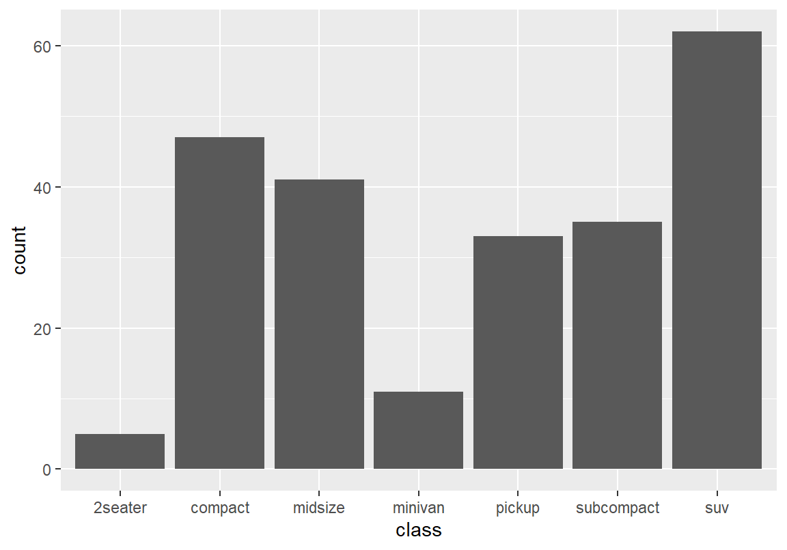
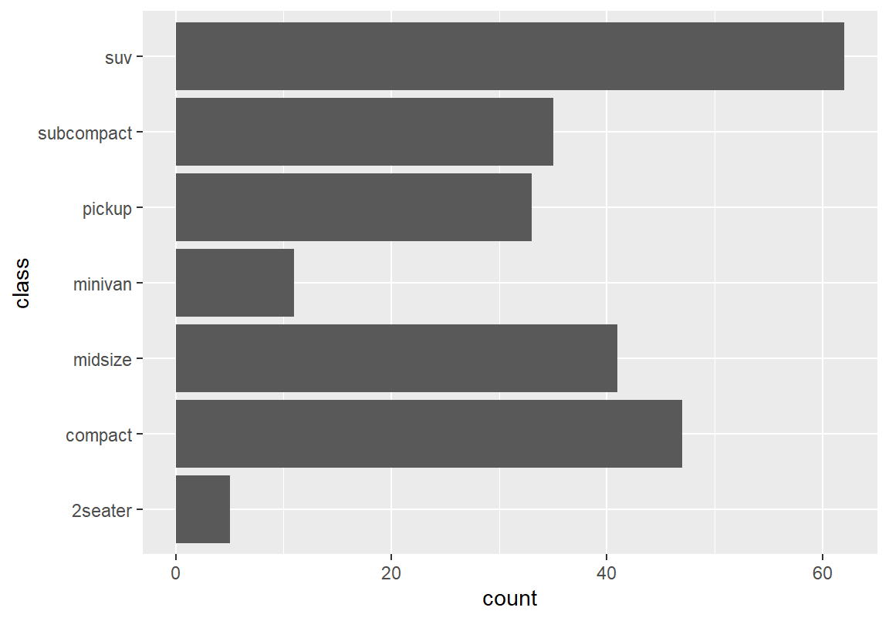
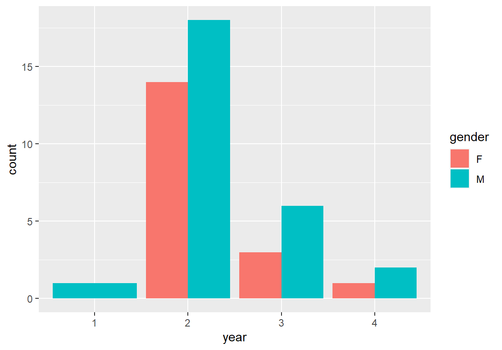
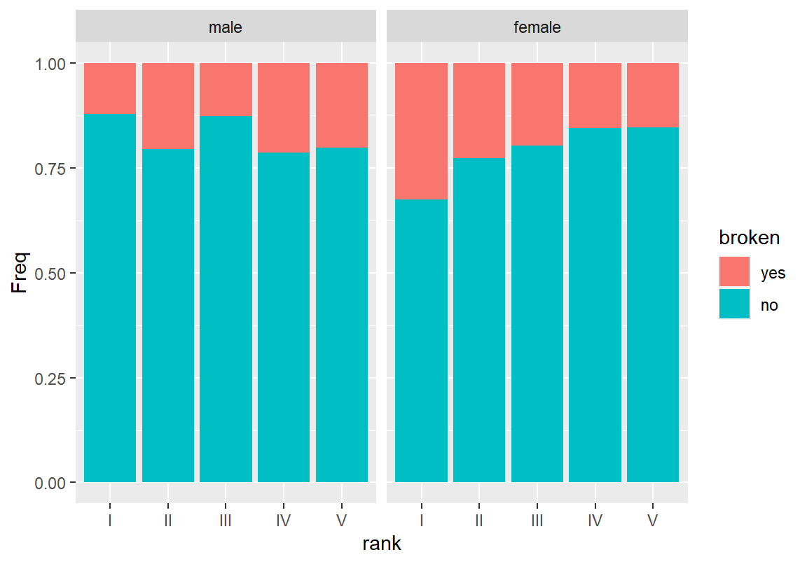

Chapter 7 범주형 변수에 대한 R 기술통계
1.4 절에서 살펴보았듯이 범주형 변수는 관측대상이 속하는 범주를 나타내는 데이터이다. bizstatp 패키지에 있는 course 데이터의 전공(major), 학년(year), 성별(gender), 분반(class) 열이 범주형 변수이다. 이런 변수들은 한 학생이 어떤 범주에 포함되는지를 나타낸다. 예를 들어 course 데이터의 첫 행을 보면 이 학생은 비 ME 전공, 4학년, 남성(M), 1분반의 범주에 속함을 알 수 있다.
major year gender class mid final hw score
1 Others 4 M 1 62 66 83.6 73.47
2 Others 3 F 1 46 37 88.7 61.50
3 ME 2 M 1 94 82 87.9 89.18
4 ME 2 M 1 73 71 88.7 78.47
5 ME 2 M 1 96 93 90.6 93.88
6 ME 2 M 1 54 43 84.3 64.39범주형 변수에 대한 기술통계 분석은 범주 별로 관측빈도의 분포를 구하는 것이 주를 이룬다. course 데이터를 예로 들면 이 과목을 수강하는 남성과 여성의 빈도, 학년별 빈도, 전공별 빈도 등이 범주형 변수 분석의 일차적 관심사라 할 수 있다.
또한 범주형 변수는 특히 사람들의 태도나 의견을 조사하는 사회과학이나 마케팅 조사분석에서 자주 사용되는 척도이다.
이 장에서는 한 범주형 변수에 대한 분포를 분석하는 방법과 여러 개의 범주형 변수 간의 상관성을 분석하는 방법으로 나누어 R을 이용한 기술통계 방법을 설명한다.
7.1 한 범주형 변수에 대한 분포 분석
한 범주형 변수를 분석할 때 관심의 초점은 범주별 분포를 확인하는 것이다. 범주별 분포로부터 다음과 같은 통계적 질문에 대한 답을 탐구한다.
- 어떤 범주가 가장 많은 빈도를 보이는가? 왜 이 범주가 많이 발생하였는가?
- 빈도가 희소한 범주는 무엇이고 왜 발생이 적은가?
- 범주별 발생 빈도의 분포가 분석자의 예상과 맞는가? 틀리다면 그 원인은 무엇인가?
7.1.1 범주형 변수 분포를 수치로 요약하기 - 빈도표 구하기
범주별 분포를 수치로 요약할 때는 크게 다음 두 가지 방식 중 하나를 이용한다.
- 절대 빈도표: 범주 별로 실제 관측된 횟수(빈도)를 표로 나타낸다.
- 상대 빈도표: 전체 관측 횟수를 1로(100%)로 하였을 때 범주 별 상대적 빈도(비율 또는 백분율)을 표로 나타낸다.
절대 빈도표는 실제 관측 빈도를 확인할 수 있어 더 정확한 방식이지만, 범주 별 빈도를 한눈에 파악하기 어려운 단점이 있다. 다음은 course 데이터의 학년 변수에 대한 절대 빈도표와 상대 빈도표를 R에서 구한 예이다.
| year | Freq |
|---|---|
| 1 | 1 |
| 2 | 32 |
| 3 | 9 |
| 4 | 3 |
| year | Freq |
|---|---|
| 1 | 2.22 |
| 2 | 71.11 |
| 3 | 20.00 |
| 4 | 6.67 |
7.1.1.1 절대 빈도표 만들기
R에는 절대 빈도표를 만들기 위해 다음 명령어들을 사용할 수 있다.
- 기본
base패키지의table()함수 (별도의 패키지 적재 불필요 없음) - 기본
stat패키지의xtabs()함수 (별도의 패키지 적재 불필요 없음) reshape2패키지의acast()또는dcast()함수 (reshape2패키지 적재 필요)dplyr패키지의count()함수 (dplyr패키지 적재 필요)
이 책에서는 R의 기본 기능으로 제공하는 table()과 xtabs() 함수를 이용하는 방법을 설명한다. table()과 xtabs() 함수를 사용하는 방법은 문법과 빈도표를 표현하는 방식이 모두 단순하고 직관적이서 사용자가 이해하기 쉽고 사용하기 편리하다. 또한 만들어진 빈도표를 R의 기본 가설검정 함수에 바로 사용할 수 있는 장점도 있다. 다만 빈도표를 자유자재로 변형하기가 까다로운 단점이 있다. 그러므로 빈도표를 이용하여 다양한 후속 작업을 하는 경우에는 dplyr 패키지를 사용하여 빈도표를 구하는 것이 좋다. 아울러 reshape2 패키지는 빈도표 또는 분할표를 만들 때 행과 열을 다양한 형식으로 배열할 수 있는 장점이 있다. 만약 빈도표를 원하는 방식으로 변형하여 출력하기를 원하면 reshape2 패키지를 사용하는 것이 좋다.
table() 함수로 절대 빈도표 만들기
table() 함수로 한 변수의 절대 빈도표를 만드는 문법은 다음과 같다.
table(벡터)
table(데이터프레임$열이름)다음은 x라는 문자열 벡터에 대한 절대빈도표를 table() 함수로 구한 예이다.
x
a b
1 2 table() 함수는 벡터를 인수로 받으므로, 데이터프레임의 열의 빈도를 구하기 위해서는 $ 연산자를 이용하여 데이터 프레임의 열을 지정하여야 한다.
다음은 course 데이터에서 학년, 전공, 성별, 분반별 절대 빈도표를 구한 결과이다. 해당 과목은 2학년이 주로 수강하였고, ME 전공이 주로, 남학생이 더 많이 수강하였음을 알 수 있다.
1 2 3 4
1 32 9 3
ME Others
40 5
F M
18 27
1 2
22 23 xtabs() 함수로 절대 빈도표 만들기
데이터 프레임에 있는 열을 table() 함수로 빈도표를 만드려면, $ 연산자를 사용하여 데이터 프레임의 열을 지정해야 한다. 뒤에서 보겠지만 여러 열을 조합하여 분할표를 만드려면 매번 데이터 프레임의 열을 $ 연산자로 지정하여야 한다. 이는 매우 번거롭고 오류 발생을 증가시킨다.
xtabs() 함수를 사용하면 data 인수에 데이터 프레임을 지정한 후 빈도표나 분할표를 만들 때 사용할 데이터 프레임의 열을 수식(formula)의 형식으로 지정할 수 있다. 다음은 xtabs()의 기본 문법이다.
xtabs(수식, data=데이터프레임)수식은 데이터프레임의 열의 수학적 관계를 나타내는 R 객체로 다음처럼 ~로 수식의 좌변과 우변에 표시될 열을 지정한다.
열이름1 + 열이름2 + ... ~ 열이름A + 열이름B + ...xtabs() 함수를 이용하여 한 범주형 변수의 절대 빈도표를 구하는 문법은 다음과 같다. 수식의 좌변은 비워둔 채로 빈도를 구할 변수를 우변에 기술한다. xtabs()의 첫 인수는 반드시 수식이어야 하므로 ~가 생략되면 안된다.
xtabs(~ 열이름, data = 데이터프레임)다음은 xtabs()를 사용하여 course의 학년 변수의 절대 빈도표를 구한 예이다.
year
1 2 3 4
1 32 9 3 table()과 동일한 결과와 형식인데 다른 점은 빈도표로 요약되는 열의 이름이 함께 출력되는 점이다.
xtabs()는 한 변수의 모든 관측치에 대한 절대 빈도표를 구할 수 있을 뿐 아니라 subset 인수를 사용하면 특정 조건에 부합되는 관측치만 뽑아 절대 빈도표를 구할 수 있다. subset 인수에는 논리값 벡터가 설정되어야 하고 논리값 벡터의 TRUE 위치의 요소만 필터링되어 빈도표가 구해진다.
xtabs(~ 열이름, data = 데이터프레임, subset = 논리값벡터)다음은 4.1.2.3 절에서 설명한 비교 연산을 사용하여 남학생의 학년별 절대 빈도표와 2분반의 학년별 절대 빈도표를 구한 예이다.
year
1 2 3 4
1 18 6 2 year
1 2 3 4
1 14 6 2 xtabs()는 subset 외에도 다양한 조건을 지정하여 빈도표를 만들 수 있다. 관심있는 독자는 xtabs() 함수의 도움말을 참조하기 바란다.
마지막으로 뒤에 상대 빈도표를 만들 때 사용하기 위하여 학년, 전공, 성별, 분반별 절대 빈도표를 변수에 할당하도록 한다.
year
1 2 3 4
1 32 9 3 major
ME Others
40 5 gender
F M
18 27 class
1 2
22 23 7.1.1.2 상대 빈도표 만들기
R 기본 패키지에서 상대 빈도표는 절대 빈도표를 이용하여 만들어진다. 상대 빈도표를 만드는 명령어는 proportions()와 prop.table()이 있는데, 두 함수는 같은 기능을 한다. prop.table()은 이전 버전의 R에서 사용되던 이름인데 하위 버전과의 호환성을 위해서 제공되는 함수이다. 그러므로 이 책에서는 proportions()을 사용하여 상대 빈도표를 구한다.
proportions()을 이용하여 상대 빈도표를 구하는 문법은 다음과 같다.
proportions(절대빈도표)다음은 학년과 성별에 대한 상대 빈도표를 구한 예이다. 상대 빈도표는 전체를 1로 하여 각 범주의 상대적 빈도(비율)을 계산한다.
year
1 2 3 4
0.02222222 0.71111111 0.20000000 0.06666667 gender
F M
0.4 0.6 상대 빈도표를 백분율로 표현하고 싶으면, 비율로 나오는 상대 빈도표에 100을 곱하면 된다. 그러면 4.1.3 절에서 설명한 벡터 연산에서의 요소의 재활용과 같은 원리로 모든 요소에 100이 곱해져서 전체가 100으로 표현된 백분율로 값이 표현된다. 즉, 2학년의 비율은 71.11 %이었다.
year
1 2 3 4
2.222222 71.111111 20.000000 6.666667 만약 백분율 표시를 반올림하여 표시하고자 하면 round() 함수를 사용한다다. 다음은 round() 함수의 사용 예와 round() 함수를 사용하여 백분율로 표현된 상대 빈도표를 소수 둘째 자리로 반올림 한 결과이다.
[1] 1.23year
1 2 3 4
2.22 71.11 20.00 6.67 7.1.2 범주형 변수 분포를 그래프로 요약하기
7.1.2.1 막대 그래프 그리기
빈도표를 가지고도 범주 별로 발생 빈도를 확인할 수 있지만, 그래프로 표현하는 것이 이해하기 더 쉽다. 범주별 발생 빈도를 그래프로 표현하는 대표적 방법이 막대 그래프이다. 막대 그래프는 범주 별로 발생 빈도에 따라 막대의 길이를 다르게 하여 범주별 빈도 차이를 파악하기 쉽게 해준다. 이 절에서는 ggplot2 패키지를 이용하여 막대 그래프를 그리는 방법을 알아본다.
절대 빈도로 막대 그래프 그리기
ggplot2 패키지의 geom_bar() 함수를 이용하면 x 속성에 매핑된 범주형 변수에 대하여 범주별 절대 빈도(관측 도수)에 따라 막대 그래프를 그려준다. 다음은 geom_bar() 함수를 사용하여 절대 빈도로 막대 그래프를 그리는 문법이다.
ggplot(데이터, aes(x = 범주형변수)) + geom_bar()다음은 course 데이터의 학년(year) 범주형 변수에 대해 절대 빈도로 막대 그래프를 그린 예이다. 범주형 변수의 범주를 가로축으로, 각 범주의 절대 빈도(count)를 세로축으로 하여 막대 그래프가 그려지는 것을 볼 수 있다.
막대 그래프의 막대의 채우기 색상을 변경하려면 geom_bar()의 fill 인수에 색을 지정해 주면 된다. (지정할 수 있는 색상 이름을 확인하려면 colors() 명령을 콘솔에서 실행해 보라. 그러면 657 개의 색상 이름이 출력될 것이다.) 여기서 주의할 점은 나중에 보게 될 aes() 안에 기술하게 되는 fill 속성과 이 fill 인수는 둘 다 막대의 채우기 색상을 지정하지만, 문법적으로 차이가 있다는 것이다. 이 두 방식의 차이에 대한 자세한 설명은 R 프로그래밍의 도형의 속성에 대응시키기 vs. 도형의 속성 인수를 설정하기 절을 참고하기 바란다.
상대 빈도로 막대 그래프 그리기
절대 빈도뿐만 아니라 상대 빈도로 빈도표를 표현할 수 있는 것 같이 막대 그래프도 상대 빈도를 세로축으로 하여 그릴 수 있다. 상대 빈도로 막대 그래프를 그리는 문법은 다음과 같다.
ggplot(데이터, aes(x = 범주형변수, y = ..prop.., group = 1)) + geom_bar()상대 빈도로 막대 그래프를 그리는 함수도 geom_bar() 함수이다. x 속성에 범주형 변수를 매핑하는 것은 동일하나, 세로축이 절대 빈도가 아니라 상대 빈도라는 것을 지정하기 위해 y속성을 ..prop..이라는 열에 매핑한다. ..prop.. 원 데이터에 있는 열이 아니라 geom_bar() 함수가 범주형 변수를 절대 빈도와 상대 빈도로 요약한 내부 데이터의 열 이름이다. 그리고 group 속성에 1을 매핑한다.5 상대 빈도는 group 별로 전체가 1이 되도록 상대 빈도를 계산하는데, 전체 관측치를 대상으로 상대 빈도를 구하려면 모든 데이터가 동일한 그룹에 속해야 한다. 그래서 모든 관측치가 group = 1이라는 동일한 그룹이 되도록 설정하였다. 좀 더 자세한 설명을 원하는 독자는 R 프로그래밍의 범주형 변수의 통계 요약 절과 group 속성 절을 참조하라.
다음은 course 데이터의 학년 열에 대한 상대 빈도 막대 그래프를 그린 예이다. 그래프의 모양은 절대 빈도로 막대 그래프를 그린 것과 동일하지만, 세로축의 척도가 상대 빈도로 변하였고, 세로축의 이름도 비율(proportion)을 나타내는 prop이라는 이름으로 바뀐 것을 볼 수 있다. 상대 빈도로 막대 그래프를 그리자 3 학년 학생의 비율이 약 20%였음을 쉽게 확인할 수 있다. 절대 빈도로 그린 막대 그래프에서는 이를 바로 확인하기는 어렵다.
막대 그래프의 좌표축 반전시키기
범주형 변수의 범주의 수가 많아지면 막대 그래프에 표시되어야 할 막대의 수도 많아진다. 이러한 경우 가로축과 세로축을 반전시켜 막대를 가로로 표현하는 것이 보기 좋을 때가 많다. ggplot2에서는 coord_flip() 함수를 사용하면 간단히 좌표축이 서로 반전되어 표현된다.
다음은 mpg 데이터의 자동차 종류(class) 열에 대한 막대 그래프를 원래의 좌표축으로, 그리고 반전된 좌표축으로 그린 예이다.


빈도 순으로 막대 그리기
범주가 매우 많은 경우에는 가장 빈번히 발생하는 범주를 쉽게 파악하기 위해서는 빈도 순으로 막대가 나타나도록 범주의 순서를 정렬하는 것이 좋다.
범주형 변수의 나열 순서를 빈도 순으로 바꾸고 싶으면 다음처럼 reorder() 함수를 사용하여 범주가 나타나는 순서를 바꾼 다음에 x 속성에 매핑한다.
ggplot(데이터, aes(x = reorder(범주형변수, 범주형변수, length)) + geom_bar()다음은 mpg 데이터의 자동차 종류(class) 열에 대한 막대 그래프를 빈도 순으로 정렬하여 그린 예이다. 좌표축도 반전을 시켜보았다.
7.1.2.2 파이 차트 그리기
TV 뉴스나 신문 기사를 보면 상대적 빈도를 그래프로 표현할 때 막대그래프 외에도 파이 차트를 이용하는 경우가 많다. 기술통계학에서는 파이 차트보다는 막대 그래프로 빈도를 표현하는 것을 권장한다. 왜냐하면 사람은 길이의 차이는 민감하게 파악하지만 넓이의 차이는 쉽게 구별하지 못하기 때문이다. 그러나 파이 차트는 매우 대중적으로 사용되므로 어떻게 그리는지 알아본다.
ggplot2에서 막대 그래프를 파이 차트로 바꾸는 것은 조금 어렵다. 그래프 문법에 따라 좌표축의 형태를 직교좌표계에서 극좌표계로 바꾸어주면 파이 차트를 그릴 수 있으나 절차가 복잡하여 ggplot2에서 파이 차트를 그리는 방법은 생략하도록 한다.
대신 R의 기본 graphics 패키지의 pie() 함수를 사용하여 파이 차트를 그려본다. pie() 함수의 기본 문법은 다음과 같다. 빈도표는 7.1.1 절에서 설명한 방식으로 구한 빈도표를 의미한다.
pie(빈도표)다음은 앞서서 만들어 둔 학년 변수의 빈도표 freqYear을 사용하여 파이 그래프를 그린 예이다. main이라는 인수를 사용하여 그래프의 제목도 달아 보았다.
위 예에서 범주의 이름과 함께 원모양의 파이가 빈도에 따라 분할되어 그려짐을 볼 수 있다. 그런데 막대그래프는 세로축의 눈금으로 각 범주의 절대 또는 상대 빈도를 알 수 있지만 파이 차트은 분할된 영역의 빈도가 얼마를 나타내는지 파악하기가 힘들다. 따라서 보통 파이 차트는 분할된 영역에 상대 빈도의 값을 표현할 때가 많다.
pie() 함수의 label 인수를 사용하면 범주 별로 표시될 레이블을 지정할 수 있다.
다음 예의 첫째 줄은 범주 별 레이블을 생성하는 명령문이다. 이에 대한 자세한 문법적 설명을 생략하도록 한다.
둘째 줄은 pie() 함수의 label 인수에 첫째 줄에서 생성한 레이블을 입력하여 파이 차트를 그리는 명령문이다.
7.2 둘 이상의 범주형 변수의 상관성 분석
범주형 변수 하나하나의 분포를 확인하였으면, 여러 범주형 변수 사이의 상관성을 확인해 보아야 한다. 범주형 변수 사이의 상관성 분석을 통해 다음과 같은 통계적 질문들에 대한 답을 탐구한다.
- 한 범주형 변수의 값에 따라 다른 한 범주형 변수의 발생 빈도가 영향을 받는가? 예를 들어 다음과 같은 질문에 대해 탐구할 수 있다. 성별에 따라 마케팅 프로그램의 반응 빈도가 달라지는가? 코로나 백신 접종자와 미접종자에 따라 코로나 감염 빈도에 차이가 있는가?
- 다른 한 범주형 변수에 의해 다른 범주형 변수의 발생 빈도가 달라진다면 그 차이는 어느 정도인가?
기술통계 분석에서 두 범주형 변수의 상관성이 관측되었다면 추론통계 분석을 통해 이러한 상관성이 통계적으로 유의미한지 가설검정해 보거나, 이 관계를 이용하여 한 범주형 변수의 값이 알려져 있을 때 다른 범주형 변수의 값을 예측하는 모형을 개발할 수 있다.
7.2.1 범주형 변수의 상관성을 수치로 요약하기 - 교차표 만들기
7.2.1.1 절대 빈도로 교차표 만들기
앞에서 course 데이터에서 성별, 학년별로, 각각 하나의 범주형 변수에 대한여 빈도표를 만들어 보았다. 만약 성별에 따른 학년별 분포가 차이가 있는지, 반대로 학년별로 성별 분포의 차이가 있는지를 파악해 보고자 한다면, 남자-1학년, 여자-1학년 등등 성별-학년의 모든 가능한 값의 조합에 대해 발생 빈도를 확인해 보아야 한다.
이렇게 두 개의 범주형 변수 간의 상관성을 파악하기 위해 한 변수의 범주를 행으로, 다른 한 변수의 범주를 열로 하여, 두 변수의 범주가 교차하는 칸마다 관측 빈도를 행렬 형태로 요약한 표를 교차표(cross tables) 또는 분할표(contingency tables)라고 한다. 표 7.3은 course 데이터에서 성별을 행으로, 학년을 열로 한 교차표를 보여준다.
| 1 | 2 | 3 | 4 | |
|---|---|---|---|---|
| F | 0 | 14 | 3 | 1 |
| M | 1 | 18 | 6 | 2 |
빈도표와 마찬가지로 R에서 교차표를 만드는 방법은 다음 네 가지 방법이 있다.
- 기본
base패키지의table()함수 (별도의 패키지 적재 불필요 없음) - 기본
stat패키지의xtabs()함수 (별도의 패키지 적재 불필요 없음) reshape2패키지의acast()또는dcast()함수 (reshape2패키지 적재 필요)dplyr패키지의count()함수 (dplyr패키지 적재 필요)
이 책에서는 R의 기본 기능으로 제공하는 table()과 xtabs() 함수를 이용하여 교차표를 만드는 방법을 설명한다.
table() 함수로 교차표 만들기
table() 함수를 사용하면 빈도표와 동일한 문법으로 두 개 이상의 범주형 변수에 대한 교차표를 구할 수 있다. 다만 인수가 하나가 아니라 두 개 또는 여러 개의 범주형 변수를 인수로 나열해 주면 된다.
table(벡터1. 벡터2, ...)
table(데이터프레임$열이름1, 데이터프레임$열이름2, ...)다음은 course 데이터에서 성별과 학년의 교차표를 table() 함수로 구한 예이다. 첫째 인수로 기술된 변수의 범주가 행으로, 둘째 인수로 기술된 변수의 범주가 열로 표현되어 교차표가 구해지는 것을 볼 수 있다.
1 2 3 4
F 0 14 3 1
M 1 18 6 2만약 학년을 행으로, 성별을 열로 하여 교차표를 구하고 싶다면 다음처럼 두 인수의 위치를 바꾸어 주면 된다.
F M
1 0 1
2 14 18
3 3 6
4 1 2만약 세 범주형 변수의 교차표를 구하려면, 세 변수를 차례로 기술한다. 그러면 첫 번째, 두 번째, 세 번째로 기술된 변수가 각각 교차표의 행, 열, 층(layer)이 되어 3차원의 교차표가 만들어 진다. 다음은 성별을 행으로, 학년을 열로, 분반을 층으로 하여 교차표를 구한 예이다. 2차원인 컴퓨터 화면 상에서 3차원 데이터를 표현할 수 없으므로 층 별로 나누어 교차표가 나타났다. 첫 번째 행렬이 1분반의 성별-학년 교차표이고, 두 번째 행렬이 2분반의 성별-학년 교차표이다.
, , = 1
1 2 3 4
F 0 8 2 0
M 0 10 1 1
, , = 2
1 2 3 4
F 0 6 1 1
M 1 8 5 1xtabs() 함수로 교차표 만들기
빈도표와 마찬가지로 xtabs() 함수를 사용하면 data 인수에 데이터 프레임의 열을 $ 연산자로 사용하지 않고도 지정할 수 있기 때문에 데이터에서 여러 개의 열을 지정해야 하는 교차표를 만들 때 xtabs()는 매우 편리하다.
범주형 변수가 하나일 때와 달라진 점은 수식의 우변에 교차표에 사용될 범주형 변수를 +로 연결하여 표현한다는 것이다.
xtabs(~ 열이름1 + 열이름2 + ..., data = 데이터프레임)수식의 우변에 첫 번째 기술되는 변수가 행, 두 번째 기술되는 변수가 열, 세 번째 기술되는 변수가 층이 되어 교차표가 만들어 진다. 두 변수만 기술되면 행렬 형식의 교차표가 만들어 진다.
다음은 course 데이터에서 성별-학년 2차원 교차표, 성별-분반 2차원 교차표, 그리고 성별-학년-분반의 3차원 교차표를 xtabs() 함수로 구한 예이다.
year
gender 1 2 3 4
F 0 14 3 1
M 1 18 6 2 class
gender 1 2
F 10 8
M 12 15, , class = 1
year
gender 1 2 3 4
F 0 8 2 0
M 0 10 1 1
, , class = 2
year
gender 1 2 3 4
F 0 6 1 1
M 1 8 5 1한 범주형 변수의 빈도표를 만들 때 설명한 것처럼 xtabs() 함수의 장점은 열 이름을 table() 함수보다 편리하게 지정할 수 있다는 점뿐만 아니라, 특정 조건의 데이터만 선택하여 교차표를 만들 수 있다는 점이다. 만약 총점(score)가 80점 이상인 학생과 미만인 학생의 성별-학년별 상관성을 나누어 분석한다고 하자. 다음처럼 subset 인수에 해당 조건인 관측만 TRUE가 되도록 논리값 벡터를 지정해 주면 해당 조건의 관측만으로 교차표를 생성한다.
year
gender 1 2 3 4
F 0 4 1 1
M 0 3 3 1 year
gender 1 2 3 4
F 0 10 2 0
M 1 15 3 1교차표에서 빈도표 구하기
원 데이터에서 빈도표를 직접 구할 수도 있지만, 교차표에서 각 범주형 변수의 빈도표를 구할 수도 있다. 표 7.3처럼 course 데이터에서 성별을 행으로, 학년을 열로 한 교차표가 있으면, 행으로 교차표의 빈도를 합산하면 성별 빈도표가 만들어지고, 열로 교차표의 빈도를 합산하면 학년 빈도표가 만들어지는 것을 알 수 있다.
marginSums() 또는 margin.table() 함수를 이용하면 교차표를 행별 또는 열별로 합산하면 빈도표를 구할 수 있다. margin은 교차표를 어느 방향으로 합산하여 빈도표를 만들지를 지정한다. 1이면 행으로, 2이면 열로 합산을 한다. margin 인수에 값을 주지 않으면 교차표의 모든 빈도를 합하여 총 빈도를 구한다.
marginSums(교차표) # 총 빈도 합산
marginSums(교차표, margin = 1) # 행으로 빈도 합산
marginSums(교차표, margin = 2) # 열로 빈도 합산다음은 성별-학년 2차원 교차표에서 전체, 성별, 학년별 관측빈도의 합을 구한 예이다. marginSums() 함수 호출 시 margin 인수를 기술하지 않으면 교차표의 총 빈도가, margin 인수가 1이면 교차표의 행별 합이, margin 인수가 2이면 교차표의 열별 합이 결과로 주어진다.
[1] 45gender
F M
18 27 year
1 2 3 4
1 32 9 3 만약 교차표에 행별, 열별 합을 포함하여 출력하고 싶으면 addmargins() 함수를 이용한다.
year
gender 1 2 3 4 Sum
F 0 14 3 1 18
M 1 18 6 2 27
Sum 1 32 9 3 453차원 교차표에서도 marginSums()를 이용하여 빈도표를 만들 수 있다. 3차원 교차표에서는 margin 인수에 3을 부여하면 층별로 합산이 이루어 진다. 다음은 성별-학년-분반 교차표에서 전체 총 빈도, 성별 빈도, 학년 빈도, 분반별 빈도를 구한 예이다.
[1] 45gender
F M
18 27 year
1 2 3 4
1 32 9 3 class
1 2
22 23 3차원 교차표에서는 marginSums()를 이용하여 2차원 교차표도 만들 수 있다. 예를 들어 성별-학년-분반 교차표에서 행과 열을 기준으로 합산을 하면 층은 사라지고 성별-학년 교차표가 된다. 또는 행과 층을 기준으로 합산하면 성별-분반 교차표가 된다.
year
gender 1 2 3 4
F 0 14 3 1
M 1 18 6 2 class
gender 1 2
F 10 8
M 12 157.2.1.2 상대 빈도로 교차표 구하기
절대 빈도로 표시된 성별-학년 교차표는 각 범주 조합이 몇 번 관측되었는지를 파악할 수 있으나, 전체 관측에서 차지하는 비중이 얼마인지 파악하기 힘들다. 예를 들어 남자와 여자의 학년별 비율이 차이가 있는지를 살펴보려면 상대 빈도로 교차표를 이용하는 것이 좋다.
상대 빈도로 빈도표를 만들 때와 마찬가지로 proportions()나 prop.table() 함수를 이용하면 절대 빈도 교차표에서 상대 빈도 교차표를 구할 수 있다. 2차원 절대 빈도 교차표에서 상대 빈도 교차표를 만드는 방법은 다음 세 가지 방법이 있다.
- 전체 관측 도수를 1로 하여 각 범주 조합의 상대적 비율을 나타낸다.
- 절대 빈도 교차표의 각 행의 빈도 합을 1로 하여 행별로 상대적 비율을 나타낸다.
- 절대 빈도 교차표의 각 열의 빈도 합을 1로 하여 열별로 상대적 비율을 나타낸다.
propotions() 함수의 문법은 다음과 같다.
propotions(절대빈도교차표) # 총 관측 도수 대비 상대 빈도
propotions(절대빈도교차표, margin = 1) # 행별 상대 빈도
propotions(절대빈도교차표, margin = 2) # 열별 상대 빈도다음은 성별-학년 절대빈도 교차표에서 전체 관측 도수를 1로 하여 상대 빈도를 구한 예이다. 전체 45명 학생에 대한 관측 중 남자이면서 2학년인 학생이 40%를 차지함을 볼 수 있다. 전체 합이 1이 되는 것을 확인하라.
year
gender 1 2 3 4
F 0.00000000 0.31111111 0.06666667 0.02222222
M 0.02222222 0.40000000 0.13333333 0.04444444전체 관측도수 대비 상대적 빈도뿐 아니라 교차표의 행별, 열별 상대 빈도를 구할 수도 있다. 다음 중 첫 번째 예는 행별 상대 빈도, 즉 성별로 학년 비율을 구한 것이다. 여자 학생 중 2학년 학생은 77.8%를 차지하고 있다. 행의 합은 1이 되는 것을 확인하라. 두 번재 예는 열별 상대 빈도, 즉 학년별로 성별 비율을 구한 것이다. 3학년 학생 중 여학생은 33.3%임을 알 수 있다. 열의 합이 1이 되는 것을 확인하라. 이렇듯 어떤 범주형 변수의 값에 따라(조건) 나머지 범주형 변수의 비율(상대 빈도)을 확인하고 싶으면, 조건이 되는 범주형 변수의 값에 따라 상대 빈도를 구하여 주면 된다.
year
gender 1 2 3 4
F 0.00000000 0.77777778 0.16666667 0.05555556
M 0.03703704 0.66666667 0.22222222 0.07407407 year
gender 1 2 3 4
F 0.0000000 0.4375000 0.3333333 0.3333333
M 1.0000000 0.5625000 0.6666667 0.66666673차원 이상의 절대빈도 교차표에 대해서도 proportions() 함수를 이용하면 상대 빈도표를 구할 수 있다. proportions()의 margin 인수를 설정하는 방식은 marginSums() 함수를 3차원 교차표에 적용할 때와 동일한 방식으로 하면 된다. margin은 1, 2, 3으로 주면 행, 열, 층별 합이 1이 되도록 상대 빈도표를 구한다. 두 개 이상의 차원을 margin에 지정하면 두 차원이 교차되는 셀들의 합이 1이 되도록 상대 빈도표를 구한다. 다음은 성별-학년-분반 교차표에서 행, 열, 층별 상대 빈도와, 행-열 조합을 1로 하였을 때의 상대 빈도표를 구한 예이다.
, , class = 1
year
gender 1 2 3 4
F 0.00000000 0.44444444 0.11111111 0.00000000
M 0.00000000 0.37037037 0.03703704 0.03703704
, , class = 2
year
gender 1 2 3 4
F 0.00000000 0.33333333 0.05555556 0.05555556
M 0.03703704 0.29629630 0.18518519 0.03703704, , class = 1
year
gender 1 2 3 4
F 0.0000000 0.2500000 0.2222222 0.0000000
M 0.0000000 0.3125000 0.1111111 0.3333333
, , class = 2
year
gender 1 2 3 4
F 0.0000000 0.1875000 0.1111111 0.3333333
M 1.0000000 0.2500000 0.5555556 0.3333333, , class = 1
year
gender 1 2 3 4
F 0.00000000 0.36363636 0.09090909 0.00000000
M 0.00000000 0.45454545 0.04545455 0.04545455
, , class = 2
year
gender 1 2 3 4
F 0.00000000 0.26086957 0.04347826 0.04347826
M 0.04347826 0.34782609 0.21739130 0.04347826, , class = 1
year
gender 1 2 3 4
F 0.5714286 0.6666667 0.0000000
M 0.0000000 0.5555556 0.1666667 0.5000000
, , class = 2
year
gender 1 2 3 4
F 0.4285714 0.3333333 1.0000000
M 1.0000000 0.4444444 0.8333333 0.50000007.2.2 범주형 변수의 상관성을 그래프로 요약하기
교차표를 가지고 두 범주형 변수의 관계를 확인할 수 있지만, 그래프로 표현하는 것이 한 눈에 파악하기 좋다. 두 범주형 변수의 상관성을 나타내는 방법으로는 주로 막대 그래프와 모자이크 그래프가 자주 사용된다.
7.2.2.1 두 범주형 변수의 막대 그래프 그리기
쌓은 막대 그래프 그리기
두 범주형 변수의 관계를 막대 그래프로 나타내는 방법은, 두 범주형 변수 중 한 변수를 가로축(x)으로, 다른 범주형 변수를 막대의 채우기 색상(fill)으로 달리 표시하여 관측 도수를 표현한다.
다음은 ggplot2 패키지에서는 geom_bar() 함수를 이용하여 두 범주형 변수의 막대 그래프를 그리는 문법이다.
ggplot(데이터, aes(x = 범주형변수1, fill = 범주형변수2)) + geom_bar()다음은 geom_bar() 함수를 이용하여 학년-성별 분포를 막대 그래프로 표현한 것이다. 학년을 가로축에, 성별에 따라 막대의 채우기 색상이 달라지도록 매핑하였다.

위의 그래프처럼 한 범주를 기준으로 막대를 쌓아서 그리는 그래프를 쌓은 막대 그래프라고 한다. 쌓은 막대 그래프는 중심이 되는 변수-여기서는 학년-에 대한 분포가 막대의 크기로 표현되어 있어서 중심이 되는 범주형 변수의 분포를 확인할 수 있는 동시에, 중심이 되는 변수의 값이 정해져 있을 때 나머지 변수의 분포의 차이를 비교하기 좋다. 위의 쌓은 막대 그래프에서 2학년이 가장 빈도가 많으며, 2 학년이 남/녀 성별 비율이 가장 균형을 이루고 있다는 것을 확인할 수 있다.
나란한 막대 그래프 그리기
쌓은 막대 그래프는 중심이 되는 변수-가로축에 매핑되는 변수-의 절대 빈도를 파악하기 쉬운 장점이 있으나, 두 범주형 변수의 범주 값의 조합 중 가장 빈도가 높은 조합이 무엇인지 한 눈에 파악하기 어렵다. 그리고 한 범주형 변수의 값이 정해져 있을 때 다른 범주형 변수의 분포의 차이를 파악하기도 어렵다. 나란한 막대 그래프는 채우기 색상(fill)에 매핑된 범주형 변수의 값에 따라 나타나는 막대를 쌓아 표현하는 것이 아니라 나란히 표시하여 각 범주 조합의 절대 빈도를 파악할 수 있다.
다음은 geom_bar() 함수를 이용하여 나란한 막대 그래프를 그리는 문법이다. 쌓은 막대 그래프의 문법과 동일한데, 다만 geom_bar() 함수의 position 인수를 "dodge"로 설정하는 것만 다르다.(따옴표가 있다는 것에 주의.) ggplot2 패키지에서 position 문법의 의미를 자세히 알고자 하는 독자는 R 프로그래밍의 ggplot2의 위치 조정 절을 참조하기 바란다.
ggplot(데이터, aes(x = 변수1, fill = 변수2)) + geom_bar(position = "dodge")다음은 앞에서 그린 학년과 성별 변수에 대하여 쌓은 막대 그래프를 나란한 막대 그래프를 그린 것이다. 절대 빈도가 가장 큰 조합은 2학년-남(M)학생 조합임을 알 수 있다. 학년 별로 성별 분포를 확인할 수 있는데, 다른 색상으로 표현된 막대의 크기에서 모두 학년에서 남자가 많았음을 확인할 수 있다. 1학년은 남학생밖에 없기 때문에 하나의 막대만 표시되었다.

x와 fill의 매핑을 서로 바꾸면, 성별로 학년 분포(절대 빈도)를 확인할 수 있다. 남, 녀 모두 2학년이 가장 많았고, 그 다음 3학년, 4학년 순으로 수강하고 있음을 볼 수 있다.
상대 빈도로 막대 그래프 그리기
그런데 학년별로 성별 비율의 상대적 차이를 분석하고자 한다면, 절대 빈도로 그래프를 그려주는 쌓은 막대 그리프나, 나란한 막대 그래프보다는 상대 빈도로 막대 그래프를 그리는 것이 좋다.
상대 빈도로 그리는 막대 그래프는 가로축의 범주별 관측 도수를 1이라고 할 때 색상으로 매핑된 범주의 상대 빈도를 막대의 크기로 표현한다.
다음은 geom_bar() 함수를 이용하여 상대 빈도로 막대 그래프를 그리는 문법이다. 나란한 막대 그래프의 문법과 동일한데, 다만 geom_bar() 함수의 position 인수를 "fill"로 설정하는 것만 다르다.(따옴표가 있으며, 막대의 채우기 색상을 매핑할 때 사용하는 fill과는 다른 의미이다. 막대의 크기를 모두 1로 채운다는 의미로 이해하면 된다.)
ggplot(데이터, aes(x = 변수1, fill = 변수2)) + geom_bar(position = "fill")다음은 각 학년의 데이터를 100%로 하여 성별로 상대 빈도를 막대 그래프로 그려본 것이다. 이 과목의 경우 2학년보다는 3, 4학년에서 남자 학생의 비율이 더 많았음을 볼 수 있다. 이러한 차이가 우연히 발생한 것인지 통계적으로 유의미한 차이인지는 가설검정을 해보아야 알 수 있을 것이다.

7.2.2.2 범주형 변수의 상관성을 모자이크 그래프로 그리기
앞서 살펴본 상대 빈도로 막대 그래프를 그리는 방법은 한 변수의 값에 따라 다른 범주형 변수의 상대적 비율을 파악하기 쉬운 장점이 있으나, 전체 데이터에서 각 범주 조합의 비중을 파악할 수는 없어서 보는 사람들에게 왜곡된 정보를 줄 수도 있다. 반면 쌓은 막대 그래프나 나란한 막대 그래프는 절대 빈도로 막대를 그리므로 이러한 왜곡을 막을 수 있으나 상대 빈도를 비교하기 어렵다.
예를 들어 앞의 상대 빈도로 그린 막대 그래프에서 1학년 학생은 100%가 남자인 것을 볼 수 있다. 만약 이 그래프만 보고 판단하면 1학년에서 남자 학생의 비율이 매우 큰 것이 의아하게 생각될 수 있다. 그러나 사실 1학년 학생은 전체 학생 중 한 명밖에 없었고, 그 한 명이 남자였기 때문에 1학년의 성별 비율이 100% 남자로 표시된 것이다. 이 경우 1 학년 학생의 데이터가 매우 적다는 것을 표현하면 좋다.
모자이크 그래프는 한 범주형 변수의 값에 따라 다른 범주형 변수의 상대 빈도를 비교하기 좋게 표시하면서도 각 범주 조합의 비중의 크기를 파악할 수 있게 해준다. 모자이크 그래프는 가로축에 매핑되는 범주형 변수의 값의 빈도에 따라 막대의 폭을 다르게 표시한다.
모자이크 그래프는 ggplot2를 기반으로 하는 ggmosiac 패키지로 모자이크 그래프를 그릴 수 있지만, 여기서는 vcd 패키지의 mosaic() 함수를 사용하면 모자이크 그래프를 그리도록 한다. vcd 패키지가 설치되어 있지 않으면 다음 명령이나 RStudio의 [Packages] 탭을 사용하여 설치를 하도록 한다.
mosaic() 함수의 문법은 다음과 같다.
mosaic(범주형변수2 ~ 범주형변수1, data = 데이터, direction = "v)다음은 학년-성별 모자이크 그래프를 그린 예이다. 각 학년의 성별 비율을 파악할 수 있을뿐 아니라 2학년, 3학년, 4학년 순으로 빈도가 높음을 확인할 수 있으며, 1학년은 매우 데이터가 적다는 것을 파악할 수 있다.
7.3 범주형 변수의 분석 사례
7.3.1 관절염 치료 임상시험 데이터 분석
지금까지 범주형 변수의 분석과 관련하여 배운 내용을 이용하여 관절염 치료법에 대한 임상시험 데이터를 분석해 보자. 이 데이터는 Koch and Edwards(1988)가 새로운 관절염 치료법의 효과를 측정한 데이터이다. 이 데이터는 vcd라는 패키지에 Arthritis라는 이름으로 포함되어 있고 여기서는 교육의 목적으로 bizstatp 패키지에 같은 이름으로 재수록 하였다.
bizstatp 패키지가 적재되어 있지 않으면 먼저 적재한 후 다음 명령으로 Arthritis 데이터를 살펴보자.
ID Treatment Sex Age Improved
1 57 Treated Male 27 Some
2 46 Treated Male 29 None
3 77 Treated Male 30 None
4 17 Treated Male 32 Marked
5 36 Treated Male 46 Marked
6 23 Treated Male 58 Marked
7 75 Treated Male 59 None
8 39 Treated Male 59 Marked
9 33 Treated Male 63 None
......이 데이터를 분석하여 다음과 같은 질문에 답을 해보자.
- 새로운 치료법은 아무 치료도 하지 않는 것보다 효과가 있는가?
- 새로운 치료법의 효과는 성별로 차이가 있는가?
본격적으로 질문에 답하기에 전에 summary() 함수로 전체 데이터에 대한 통계 요약을 해보자. 아래 결과를 보면, 이 임상시험에서 새로운 치료법을 받은(Treated) 환자와 플라시보(Placebo) 치료를 받은 환자의 수가 거의 비슷하였다. 또한 여자 환자의 수가 남자 환자의 수보다 2배 이상 많았고, 환자의 연령대는 23세부터 74세까지 있었다. 치료(플라시보 치료 포함) 후에 차도가 거의 없었던(None) 환자의 수와 약간(Some) 또는 확실히(Marked) 효과가 있었던 환자를 합친 수가 같았다.
ID Treatment Sex Age Improved
Min. : 1.00 Placebo:43 Female:59 Min. :23.00 None :42
1st Qu.:21.75 Treated:41 Male :25 1st Qu.:46.00 Some :14
Median :42.50 Median :57.00 Marked:28
Mean :42.50 Mean :53.36
3rd Qu.:63.25 3rd Qu.:63.00
Max. :84.00 Max. :74.00 그럼 이런 기본 정보를 바탕으로 새로운 치료법이 증상의 개선에 뚜렷이 도움이 되었는지 확인해 보자. 치료법(Treatment)과 증상 개선 여부(Improved)에 대한 교차표를 구해보니 뚜렷한 증상 개선(Marked)이 된 환자 중에는 새로운 치료법을 받은 환자(Treated)가 많았다.
Improved
Treatment None Some Marked
Placebo 29 7 7
Treated 13 7 21이를 좀더 정확히 살펴보기 위해 치료법에 따른 증상 개선의 상대적 비율(%)을 구해보자. 결과에서 플라시보 치료를 받은 환자의 67%가 증상의 개선이 없었는데, 새로운 치료법을 받은 환자는 31%만 개선이 없었고, 51%의 환자는 확실한 증상 개선이 있었다.
Improved
Treatment None Some Marked
Placebo 67.44 16.28 16.28
Treated 31.71 17.07 51.22물론 이러한 차이가 통계적으로 유의미한지는 다시 가설검정을 해보아야 한다. 가설검정 방법에 대해서는 뒤에 자세히 살펴보도록 하고, 가설검정 결과만 살펴보면 치료법에 따른 증상 개선 효과의 차이는 없다는 귀무가설에 대한 검정에서 p-값이 매우 작게 나와서 치료법에 따라 증상 개선 효과가 차이가 있었다는 대립가설을 채택하게 해 준다.
Pearson's Chi-squared test
data: tti
X-squared = 13.055, df = 2, p-value = 0.001463지금까지 분석한 내용을 다른 사람들에게 전달하기 좋도록 그래프로 나타내 보자.
그러면 증상 개선 효과(Improved)의 성별(gender) 차이가 있었는지를 어떻게 분석할 수 있을까? 먼저 플라시보 치료를 받은 환자에 대하여 증상 개선 효과와 환자 성별로 교차표를 구해보자. 남자에 비해 여성 환자의 확실한(Marked) 증상 개선 사례가 많아 보인다.
> tsi_placebo <- xtabs(~ Sex + Improved, data = Arthritis, subset = Treatment == "Placebo")
> tsi_placebo Improved
Sex None Some Marked
Female 19 7 6
Male 10 0 1플라시보 치료를 받은 환자에 대하여 실제 성별로 증상 개선 효과의 상대적 비율이 다른지 확인해 보자. 플라시보 치료의 경우 남자 환자의 90%가 증상 개선이 없었던 반면, 여성 환자의 40% 가량은 증상의 개선이 조금 또는 확연히 있었다.
Improved
Sex None Some Marked
Female 0.59375000 0.21875000 0.18750000
Male 0.90909091 0.00000000 0.09090909물론 이러한 수치가 관측 도수가 작아서 우연히 발생한 것일 수 있다. 그러므로 플라시보 치료자의 증상 개선 효과에 대한 성별 차이가 있었는지에 대하여 가설검정을 해보자. 관측 도수가 매우 낮은 셀이 있어서 Fisher 정확 검증으로 가설검정을 수행하였다. 결과에서 p-값이 크게 나왔으므로 성별 차이는 우연히 발생한 것이라는 귀무가설을 기각하지 못한다.
Fisher's Exact Test for Count Data
data: tsi_placebo
p-value = 0.1706
alternative hypothesis: two.sided그러면 새로운 치료법에서는 성별로 증상 개선 효과의 차이가 있었을까? 새로운 치료법을 받은 환자에 대해 성별-증상 개선 효과의 교차표를 구하여, 성별로 증상 개선의 상대적 비율을 구해보았다. 이 경우에도 여성의 증상 개선 효과가 남자보다 크게 나타난 것으로 확인할 수 있다. 그러나 플라시보 치료자와 마찬가지로 이 차이가 통계적으로 유의미한 차이라고 보기는 어렵다.
> tsi_treated <- xtabs(~ Sex + Improved, data = Arthritis, subset = Treatment == "Treated")
> prop.table(tsi_treated, margin = 1) Improved
Sex None Some Marked
Female 0.2222222 0.1851852 0.5925926
Male 0.5000000 0.1428571 0.3571429
Fisher's Exact Test for Count Data
data: tsi_treated
p-value = 0.2204
alternative hypothesis: two.sided지금까지 분석한 내용을 다른 사람들에게 전달하기 좋도록 그래프로 나타내 보자. 성별 변수로 측면으로 나누어 막대 그래프를 그리기 위해 facet_wrap() 함수를 이용하여 성별로 측면 그래프를 그렸다.
> ggplot(Arthritis, aes(x = Treatment, fill = Improved)) +
+ geom_bar(position = "dodge") +
+ facet_wrap(~ Sex)> ggplot(Arthritis, aes(x = Treatment, fill = Improved)) +
+ geom_bar(position = "fill")+
+ facet_wrap(~ Sex)막대 그래프에서 새로운 치료법을 적용하든 플라시보 치료법이든 여성이 남성에 비해 관절염의 증상 개선 효과가 더 좋은 경향을 보인다는 것을 볼 수 있다. 그러나 이 차이는 통계적으로 유의미한 확실한 차이는 아니었다.
7.3.2 이혼에 대한 사회조사 데이터 분석
bizstatp 패키지의 BrokenMarriage 데이터는 덴마크 사회 조사국에서 수행한 성별 및 사회적 계급에 따른 이혼 또는 영구적 남녀 관계가 깨진 빈도를 측정한 데이터이다. 이 데이터는 vcd라는 패키지에 BrokenMarriage라는 이름으로 포함되어 있고 여기서는 교육의 목적으로 같은 이름으로 재수록 하였다.
bizstatp 패키지를 메모리에 적재하였다면 다음 명령으로 데이터를 확인할 수 있다.
Freq gender rank broken
1 14 male I yes
2 102 male I no
3 39 male II yes
4 151 male II no
5 42 male III yes
6 292 male III no
7 79 male IV yes
8 293 male IV no
9 66 male V yes
10 261 male V no
11 12 female I yes
12 25 female I no
13 23 female II yes
14 79 female II no
15 37 female III yes
16 151 female III no
17 102 female IV yes
18 557 female IV no
19 58 female V yes
20 321 female V no이 데이터의 특징은 조사된 원 데이터-조사된 사람 한 명에 대한 관측이 행을 이루는 원래 데이터-가 아니라 이미 그룹별로 빈도가 요약된 데이터라는 것이다. 첫 번째 행은 남성이면서 1-계급에 속하는 사람이 이혼 또는 영구적 남녀 관계가 깨졌는지에 대한 물음에 그렇다고 응답(yes)한 빈도수(Freq)를 보여준다.
이렇게 이미 그룹으로 요약된 데이터를 다룰 때는 이미 요약된 빈도수가 후속 분석에서 제대로 반영되도록 주의해야 한다. 예를 들어 성별로 이혼 빈도에 대한 교차표를 구할 때, 원 데이터를 가지고 있을 때와 마찬가지로 행 하나를 관측으로 간주하여 빈도를 세면 정확한 결과를 얻을 수 없다.
broken
gender yes no
male 5 5
female 5 5BrokenMarriage 데이터처럼 이미 빈도로 요약된 데이터를 가지고 xtabs() 함수로 빈도표나 교차표를 만드려면 다음처럼 수식의 좌변에 이미 요약된 빈도를 가진 열을 기술해야 한다.
xtabs(빈도변수 ~ 범주형변수1 + ..., data = 데이터)다음은 성별-이혼 여부 변수에 대한 교차표를 구한 예이다. 수식의 좌변에 빈도수를 가지고 있는 열 Freq을 지정해 주어야 단순히 행의 개수를 세는 것이 아니라 빈도수 더하여 교차표를 만들어 준다.
broken
gender yes no
male 240 1099
female 232 1133성별로 이혼률에 차이가 있는지 확인해 보자. 상대 빈도도 거의 차이가 나지 않고, 그 차이도 통계적으로 유의미하지 않음을 볼 수 있다.
broken
gender yes no
male 0.1792382 0.8207618
female 0.1699634 0.8300366
Pearson's Chi-squared test with Yates' continuity correction
data: tgb
X-squared = 0.34175, df = 1, p-value = 0.5588그러면 사회 계급별로 이혼률에 차이가 있는지 확인해 보자. 사회 계급별로도 유의미한 차이를 보이지 않았다.
rank
broken I II III IV V
yes 0.1699346 0.2123288 0.1513410 0.1755577 0.1756374
no 0.8300654 0.7876712 0.8486590 0.8244423 0.8243626
Pearson's Chi-squared test
data: trb
X-squared = 4.8795, df = 4, p-value = 0.2999성별로 사회계급에 따른 이혼률의 차이가 있는지를 살펴보기 위해서 성별로 측면으로 나누어 막대 그래프를 그려보자. 이미 빈도로 요약된 데이터에 대한 막대 그래프는 geom_bar()가 아니라 geom_col() 함수로 막대 그래프를 그린다.
두 함수에 대한 자세한 차이는 R 프로그래밍의 ggplot2 범주형 변수의 통계 요약 절을 참조 바란다.
geom_col()으로 이미 빈도로 요약된 데이터에서 막대 그래프를 그리는 문법은 다음과 같다. x뿐 아니라 y에 빈도를 가진 영를 매핑하여 막대 그래프를 그린다.
ggplot(데이터, aes(x = 범주형변수, y = 빈도변수)) + geom_col()
ggplot(데이터, aes(x = 범주형변수1, y = 빈도변수, fill = 범주형변수2)) + geom_col()
ggplot(데이터, aes(x = 범주형변수1, y = 빈도변수, fill = 범주형변수2)) +
geom_col(position = "dodge" or "fill")성별로 사회 계급에 따른 이혼 빈도를 절대 빈도와 상대 빈도로 막대 그래프를 그려보면 다음과 같다.
> ggplot(BrokenMarriage, aes(x = rank, y = Freq, fill = broken)) +
+ geom_col() + facet_wrap(~ gender)> ggplot(BrokenMarriage, aes(x = rank, y = Freq, fill = broken)) +
+ geom_col(position = "fill") + facet_wrap(~ gender)
절대 빈도를 보여주는 그래프에서 남성에 비해 여성의 계급이 4등급에 집중되어 있다는 것을 볼 수 있다. 그리고 상대 빈도를 보여주는 그래프에서 남성에 비해 여성이 사회적 등급이 높아질수록 이혼률이 약간은 증가하는 경향을 볼 수 있다. 남성과 여성으로 나누어 보았을 때 사회계급의 차이가 이혼률에 영향을 미치는지를 살펴보기 위해 성별로 이혼 여부-사회계급의 교차표를 계산해 보자. 그리고 성별로 사회계급에 따라 이혼률이 달라지는지 확인해 보자.
다음 결과에서 남자의 이혼율은 2, 4, 5 등급에서 20% 정도이고, 1, 3 등급에서 12% 정도였는데, 이러한 차이는 통계적으로 유의미한 차이로 분석되었다.
> tbr_male <- xtabs(Freq ~ broken + rank, data = BrokenMarriage, subset = gender == "male")
> prop.table(tbr_male, margin = 2) rank
broken I II III IV V
yes 0.1206897 0.2052632 0.1257485 0.2123656 0.2018349
no 0.8793103 0.7947368 0.8742515 0.7876344 0.7981651
Pearson's Chi-squared test
data: tbr_male
X-squared = 13.984, df = 4, p-value = 0.007347다음 결과에서 여자의 이혼율은 사회 등급이 높아질수록 이혼률이 증가하는 경향을 보였는데, 이러한 차이도 통계적으로 유의미한 차이로 분석되었다.
> tbr_female <- xtabs(Freq ~ broken + rank, data = BrokenMarriage, subset = gender == "female")
> prop.table(tbr_female, margin = 2) rank
broken I II III IV V
yes 0.3243243 0.2254902 0.1968085 0.1547800 0.1530343
no 0.6756757 0.7745098 0.8031915 0.8452200 0.8469657
Pearson's Chi-squared test
data: tbr_female
X-squared = 11.286, df = 4, p-value = 0.02353남녀 합쳐서 분석할 때는 사회계급에 따른 이혼률의 차이가 유의미 하지 않았지만, 성별로 나누어 분석해 보면 남성과 여성 모두에서 사회계급과 이혼 여부가 통계적으로 유의미한 상관성을 확인할 수 있다. 이는 남성일수록 상위 계급(1, 3 등급)의 이혼률이 낮아지는데, 여성일수록 상위 계급(1, 2)의 이혼률이 높아져서, 합쳐진 데이터에서는 이러한 경향이 중화되어 나타나지 않았음을 볼 수 있다. 이 에에서 보듯이 한 변수가 다른 변수에 미치는 영향은 두 변수만 한정하여 살펴보는 것뿐만 아니라, 제 삼의 변수의 조건에 따라 두 변수의 상관성이 영향을 받는지 살펴볼 필요가 있다. 이러한 것을 살펴보기 위해서는 여러 측면으로 나누어 기술통계 분석을 실시해 보아야 하고, 분석하는 문제에 대한 충분한 배경 지식을 갖고 있어야 한다.
group속성에는 상수 값이면 아무 값이나 매핑해도 된다. 여기서는 편의상 1을 매핑하였다.↩︎